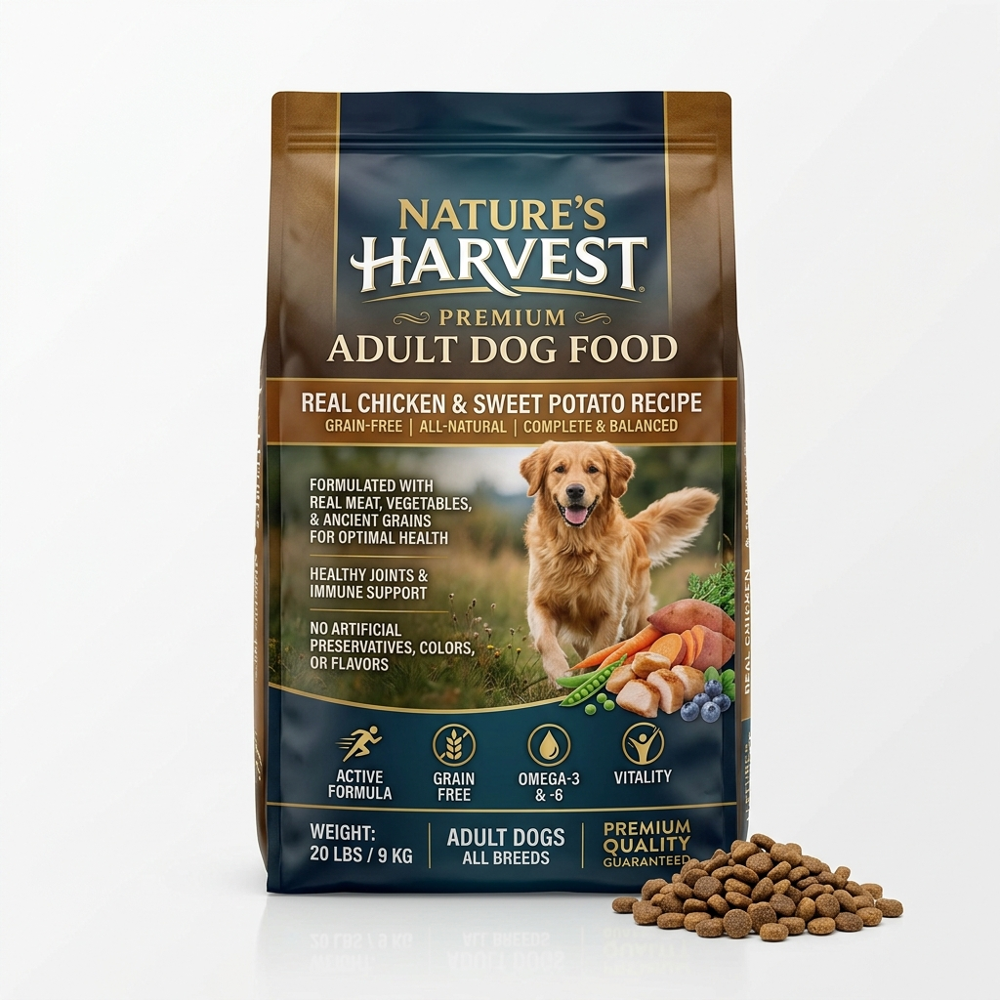
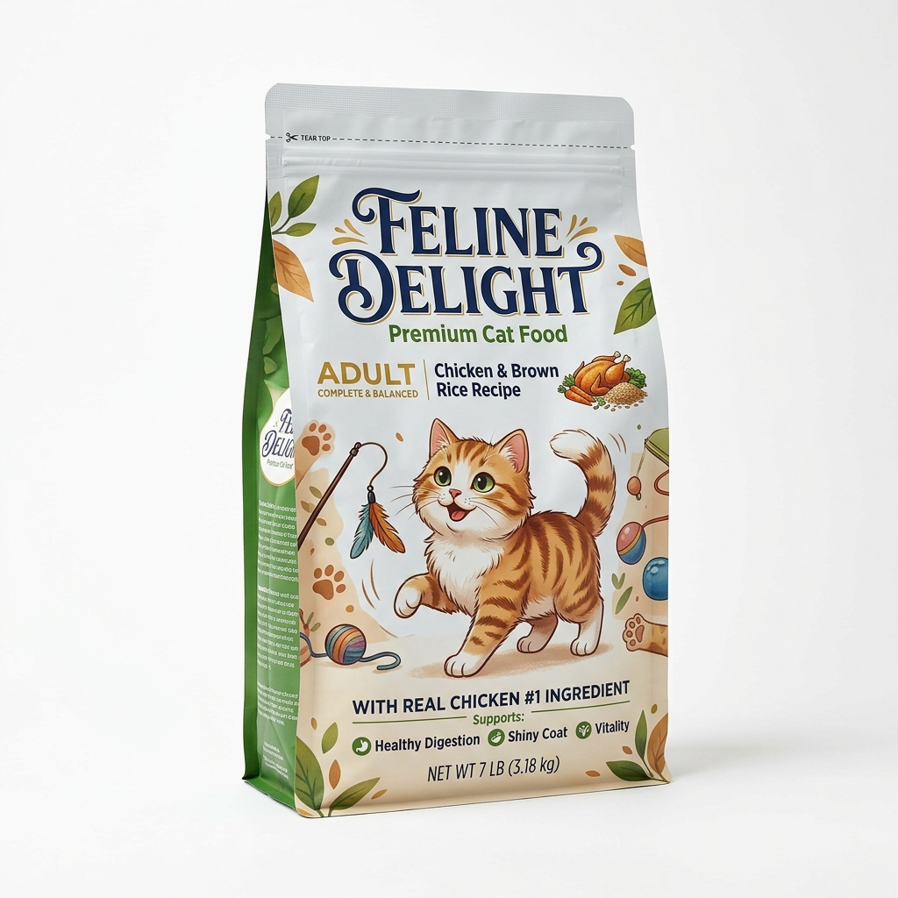

Rações Não Perecíveis
Oferecemos rações de alta qualidade para cães e gatos, com fórmulas balanceadas que garantem a saúde e o bem-estar do seu animal de estimação. Todos os nossos produtos são de marcas reconhecidas e aprovadas por veterinários.
Produto 1 — Ração Seca Premium para Cães Adultos — 15 kg

Descrição:
Ração seca premium formulada especialmente para cães adultos de todas as raças.
Desenvolvida com ingredientes de alta qualidade, contém proteínas de fonte animal,
vitaminas, minerais e antioxidantes que fortalecem o sistema imunológico, melhoram
a saúde da pele e da pelagem e proporcionam energia para o dia a dia.
Livre de corantes artificiais e conservantes prejudiciais.
Características:
- Peso: 15 kg
- Indicado para: Cães adultos de todas as raças
- Principais ingredientes: Frango, arroz integral, milho, vitaminas A, D, E e minerais
- Proteína mínima: 22%
- Gordura mínima: 10%
- Sem corantes artificiais
- Validade: 12 meses após a fabricação
Valor: R$ 189,90
Produto 2 — Ração Seca Premium para Gatos Adultos — 10 kg

Descrição:
Ração seca premium formulada especialmente para gatos adultos (a partir de 1 ano).
Com sabor de frango e peixe, irresistível para os felinos. A fórmula enriquecida com
taurina contribui para a saúde cardíaca e ocular. O teor reduzido de magnésio ajuda
na prevenção de cálculos urinários, um problema comum em gatos. Grãos especialmente
formulados para reduzir a formação de bolas de pelo no organismo.
Características:
- Peso: 10 kg
- Indicado para: Gatos adultos (a partir de 1 ano)
- Sabor: Frango e peixe
- Principais ingredientes: Frango, atum, arroz, taurina, vitaminas e minerais
- Proteína mínima: 30%
- Gordura mínima: 12%
- Enriquecida com Taurina para saúde cardíaca e ocular
- Fórmula anti-bola de pelo
- Validade: 12 meses após a fabricação
Valor: R$ 149,90
Dúvidas? Entre em contato: (11) 3456-7890 | contato@patafeliz.com.br